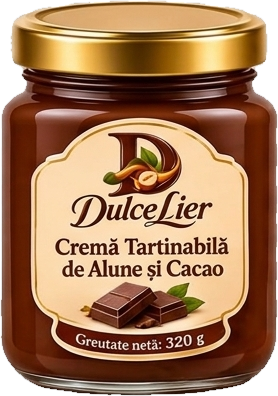
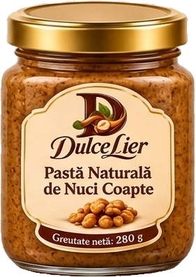
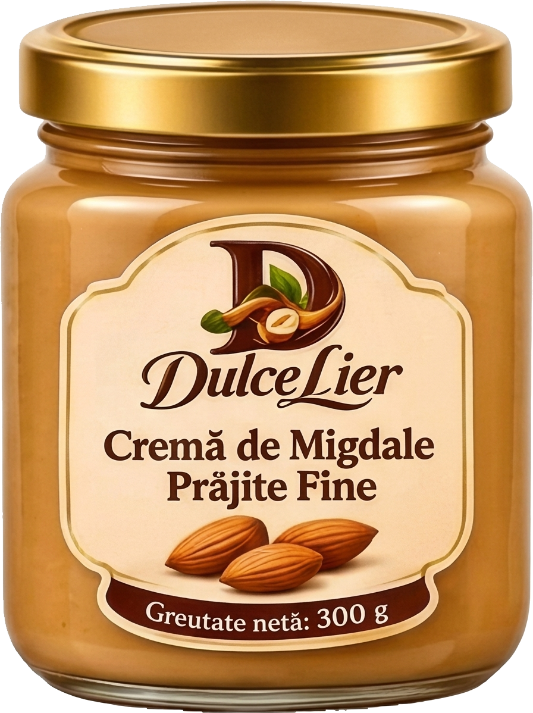
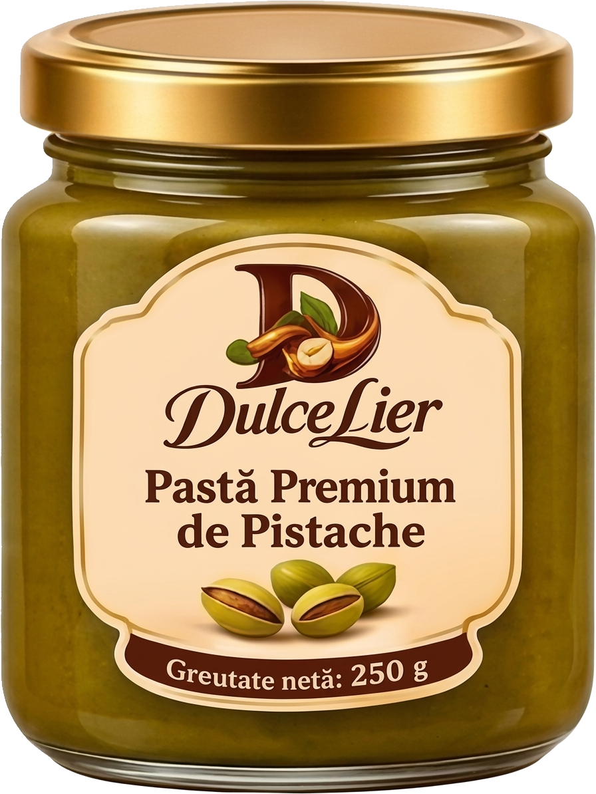

04
Creme și paste naturale
Creme tartinabile și paste din alune, nuci, migdale și fistic, preparate din ingrediente atent selecționate.

Cremă Tartinabilă de Alune și Cacao
Greutate netă: 320 g
O cremă premium, catifelată și irezistibilă, preparată din alune de pădure atent selecționate, prăjite la perfecțiune și amestecate cu cacao fină. Fără ulei de palmier.
105 lei

Pastă Naturală de Nuci Coapte
Greutate netă: 280 g
O pastă bogată și aromată, realizată exclusiv din nuci românești atent prăjite pentru a le intensifica gustul. Măcinarea grosieră păstrează textura naturală. Produs 100% natural, fără zahăr sau uleiuri adăugate.
95 lei

Cremă de Migdale Prăjite Fine
Greutate netă: 300 g
O pastă fină, cremoasă și delicată, obținută din migdale selecționate, prăjite ușor pentru a le păstra nutrienții și aroma naturală. O sursă excelentă de proteine și grăsimi sănătoase. Fără zahăr adăugat.
130 lei

Pastă Premium de Pistache
Greutate netă: 250 g
O pastă vibrantă și intensă, obținută din cele mai fine boabe de pistache coapte. Un gust autentic și rafinat, fără arome sau coloranți artificiali. Produs 100% natural, fără zahăr adăugat.
230 lei